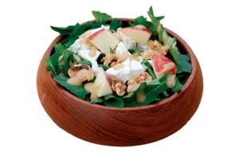
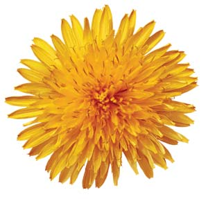
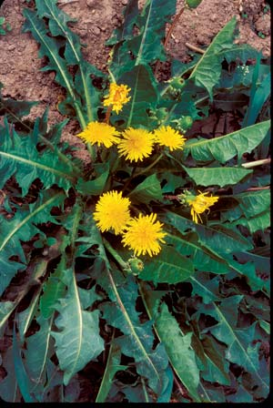
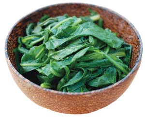
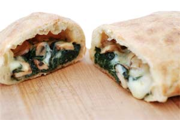
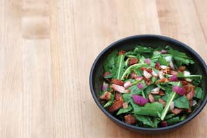

I’m going wild again, just like I did last year. My suburban wildness - if such a thing is possible - centers on a simple spring ritual that starts in mid-April and continues through mid-May: harvesting wild dandelion greens at their young and tender best.
For my neighbors who watch the spectacle, I suspect it’s a curiosity the likes of which most folks don’t see anymore: a grown man crawling around on the ground on his hands and knees with a sharp knife in one hand and a colander in the other. Although dandelions can be found throughout my yard, I’ve discovered that the best ones grow in the wildest of places, safe from the punishing foot traffic of my three boys and the whir of the lawn mower blade.
The wildest spot in my yard is behind our house under the protective canopy of 50-foot pines. The trees were planted years ago as a natural border between my yard and our neighbor’s. As they’ve grown, they’ve created a fringe forest ecosystem. The soil there is particularly rich due to the accumulation and decomposition of pine needles and windswept autumn leaves. Just enough sunlight passes through for dandelions and other opportunistic plants to thrive.
Although these wild salad greens are only 30 yards from my back door, my path to discovering them was not so direct. In fact, it veered off course by about 3,000 miles to the east. I learned the pleasures of eating dandelion salads in Europe from my Belgian mother-in-law, known as “Mami” by my sons. Mami grew up on a small family farm in the foothills of the Ardennes mountain range. Although the nearby battles of World War II were over by the time she was born, the wartime thrift mentality held fast in Europe throughout her childhood. The thinking was that if the land was prepared to offer up free food in the form of salad greens, mushrooms and berries, one would be silly to refuse.
Embraced throughout human history and across cultures and cuisines, the dandelion has been cast as public enemy No. 1 in postwar, suburban America. An estimated 80 million pounds of pesticides are used each year on home lawns to eradicate them. Yet each year, the scrappy plant returns, thumbing its sunny yellow nose.
For me, letting my dandelions grow wild and pesticide-free is not just about frugality and ecology, but also gastronomy. Food writers often say that the best foods are those with a sense of time and place. I love these bitter greens as much as I do because I know the ground they come from and appreciate that they only come once a year. They also serve as a useful reminder that good foods are closer than we may think, even as close as our own back yard.
All parts of the dandelion are edible and have medicinal and culinary uses. It has long been used as a liver tonic and diuretic. In addition, the roots contain inulin and levulin, starchlike substances that may help balance blood sugar, as well as bitter taraxacin, which stimulates digestion. Dandelion roots can be harvested during any frost-free period of the year and eaten raw, steamed, or even dried, roasted and ground into a coffee substitute. The flowers are best known for their use in dandelion wine, but they also can be added to a salad, made into jellies or dipped in batter to make dandelion fritters. The leaves are rich in potassium, antioxidants, and vitamins A and C. Dandelion greens can be eaten raw, steamed, boiled, sautéed or braised. For use in salads, greens should be harvested from new plants while still small and tender, before the first flower emerges. Larger greens tend to be tougher and more bitter, and better suited for cooking.
While dandelions may well be nature’s most successful self-seeding plant, they don’t necessarily grow where you want them. Dandelion lovers can take the guesswork out of it by planting their own.
‘Clio’ is an Italian dandelion that produces high yields of upright greens that are easy to harvest (available from Johnny’s Selected Seeds). ‘Ameliore’ is a cultivated French strain of the common dandelion with broader leaves and a milder flavor than its outlaw cousin (available from The Cook’s Garden). Milano Chicory Melange is a salad mix that includes dandelionlike ‘Catalogna’ seeds as part of a colorful mix of red and green chicories (available from John Scheepers Kitchen Garden Seeds).
4 slices of bacon, chopped
1 small red onion, diced
2 tsp brown sugar
2 tbsp cider vinegar
1 bunch dandelion greens, washed and dried, stems removed
Salt and freshly ground black pepper, to taste
Fry bacon bits in a skillet until they are crisp and have rendered all their fat. Pour off all but 1 tablespoon of the bacon drippings and return the skillet to the burner. Add onion and stir in the sugar and cider vinegar. Pour the hot dressing over the greens, tossing the greens so as to coat them with dressing. Add salt and pepper to taste.
Note: To make this recipe vegetarian, omit the bacon and prepare the dressing with oil.
1 to 2 tbsp olive oil
1 to 2 cloves garlic, chopped
1 bunch dandelion greens, washed and dried, stems removed
Salt and freshly ground black pepper, to taste
Heat olive oil in a large skillet or wok on medium-high heat. Add garlic and cook for 1 minute or until it becomes translucent. Add the greens and sauté 2 to 3 minutes or until soft, stirring occasionally. If your greens are tough, you may want to cover the pan and steam them for a minute or 2 more. Add salt and pepper to taste.
Note: If you don’t have any apples stored from the winter, substitute any firm fruit that’s in season.
2 tbsp cider vinegar
3 tbsp vegetable or nut oil
1 tsp Dijon mustard
1 tsp honey
Salt and freshly ground black pepper, to taste
1 bunch dandelion greens, washed and dried, stems removed
1⁄4 pound fresh white goat cheese, crumbled into pieces
1⁄2 cup walnuts, coarsely chopped
1 apple, cored and chopped into 1⁄2-inch pieces
Whisk vinegar, oil, mustard, honey, salt and pepper together. Pour over greens and toss lightly. Top with goat cheese, nuts and apple.
3 tbsp olive oil, divided
1⁄4 pound mushrooms (button, shiitake or baby bella), sliced
2 large garlic cloves, minced
1 bunch dandelion greens, washed and dried, stems removed
Salt and freshly ground black pepper, to taste
1 pound pizza dough
1⁄2 pound mozzarella cheese, shredded
Preheat oven to 500 degrees Fahrenheit. In a large skillet or wok, heat 2 tablespoons of the oil. Add mushrooms and garlic, and cook over moderately high heat, stirring occasionally, until the mushrooms begin to brown. Add the dandelion greens and cook until wilted, stirring occasionally, about 2 to 3 minutes. Season with salt and pepper and set aside. On a lightly floured surface, roll or stretch the dough to form two 10 inch rounds. Transfer dough rounds to a floured baking sheet or pizza pan. Sprinkle a layer of shredded cheese on half of each round, leaving a 1-inch border. Add the dandelion and mushroom mixture to the cheese layer, and top with the remaining shredded cheese. Fold the dough over to enclose the filling, forming a half-circle. Press and crimp the edges together to seal. Using a knife, poke a hole or two in the top. Brush the calzones with 1 tablespoon olive oil. Bake for about 11 minutes or until the calzones are crisp and turning golden. Cut them in half and serve hot.
We are putting together the first Mother Earth News cookbook, and would love for you to share your dandelion recipes with us. E-mail your favorites to letters@MotherEarthNews.com.
|
 ROGER DOIRON Dandelion Salad with Fresh Goat Cheese and Apples. Served raw in a salad, dandelion greens pack a nutritional punch. |
 PLANTSTOCK Spring is the season for wild dandelion hunting. |
 DAVID CAVAGNARO All parts of the dandelion are edible. The trick is simply learning when and how to use each part. |
|
 ROGER DOIRON Simple Sautéed Dandelion Greens. Pure and simple-yes, it’s easy being green! |
 ROGER DOIRON Dandelion Mushroom Calzone. Calzone is Italian for “warm, gooey, and wonderful.” OK, not really, but this recipe is! |
 ROGER DOIRON Wilted Dandelion Greens Salad. Wilted greens deliciously straddle the line between raw and cooked. |